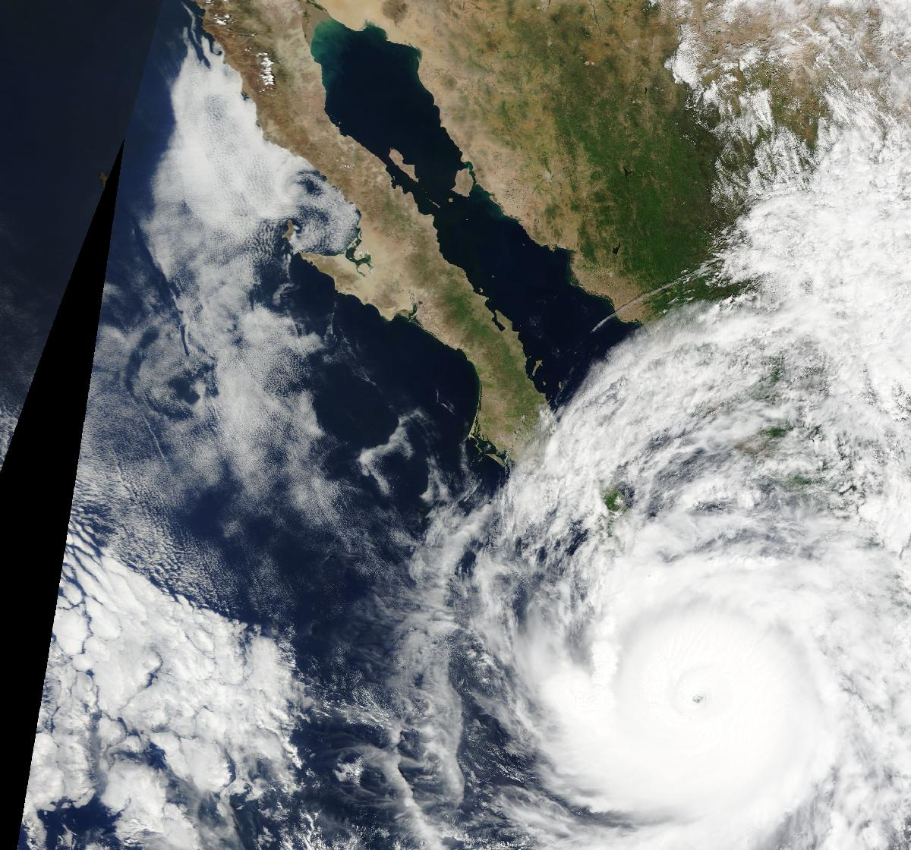
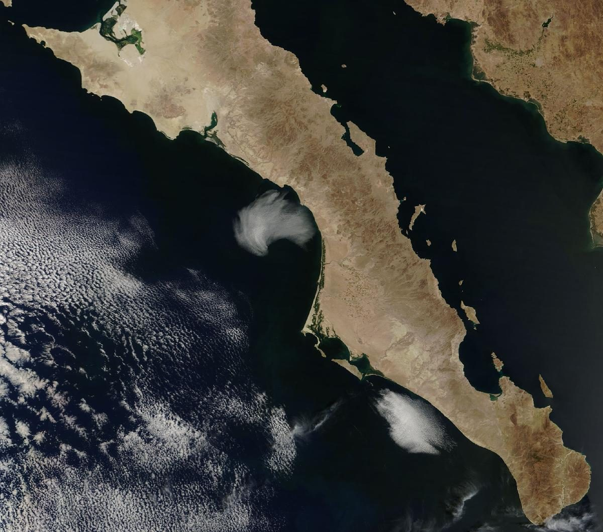
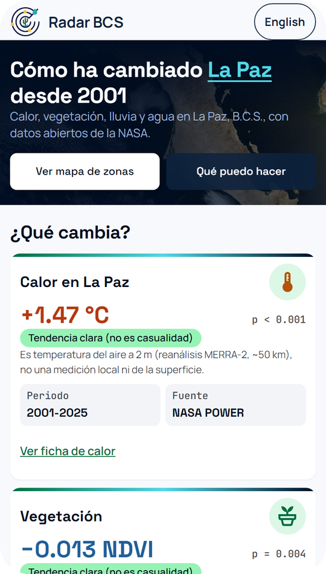
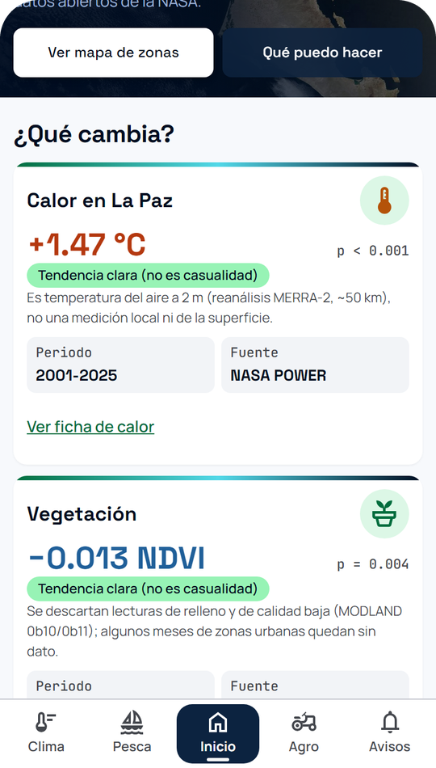
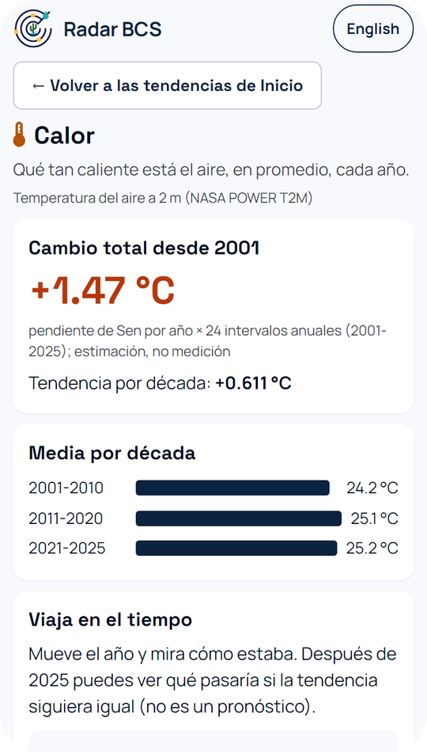
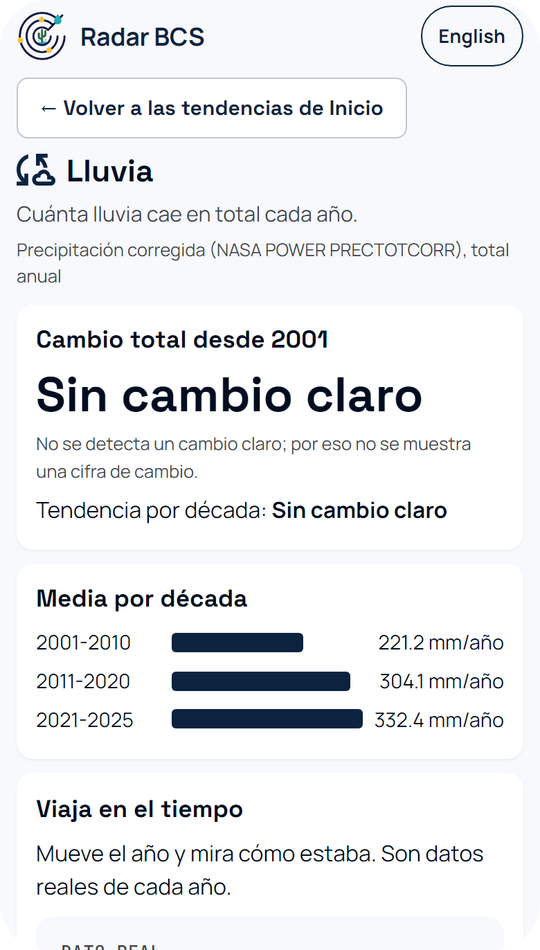
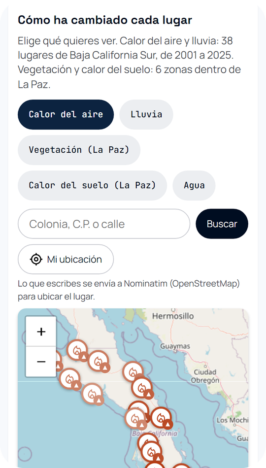
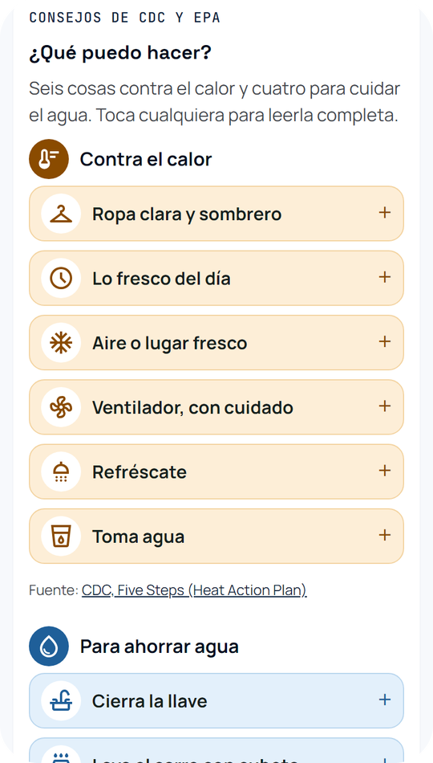
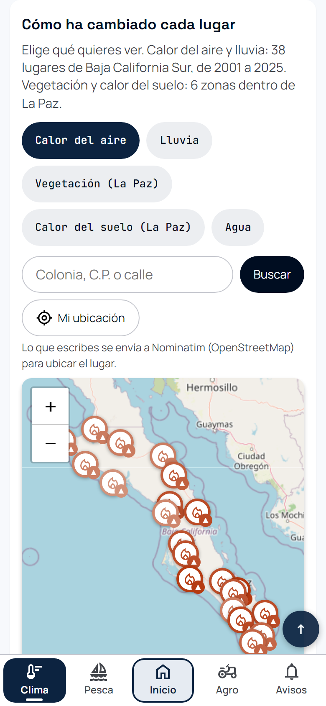

Lo que cambia despacio, año con año
personas sin hogar en La Paz, como máximo
NHC, Tropical Cyclone Report, Odile (2014). «Hasta» 10,000, según reportes de prensa.

NASA Worldview / GIBS, MODIS Terra, 2014-09-14
«Antes no hacía tanto calor.»

NASA EOSDIS GIBS / Worldview, MODIS Terra, 2025-04-20
El Congresista, 27 oct 2026. Cifra de todo el estado, no de La Paz.
millones de m³
CONAGUA, DOF, 17 ago 2023
millones de m³
CONAGUA, DOF, 17 ago 2023
Forest Trends, nov 2024
Aire, suelo y agua
Baja California Sur
De 2001 a 2026
Sí, para el calor
Cuando no lo es, también lo decimos.
Sin instalar nada. Hecha para el celular.

Facilitar el acceso a información técnica de poco alcance.
Acciones vive dentro de Clima

Vegetación de la ciudad
Aire y lluvia
Agua almacenada
Fotos de satélite
NASA POWER, mensual 2001-2025, sin un solo mes faltante
Mann-Kendall + SenNASA POWER, aire de La Paz, 2001-2025

NASA POWER, lluvia, 2001-2025

Calor: sube en los 38. Lluvia: solo en 8, de Los Cabos.
NASA POWER, 2001-2025 · 21 celdas compartidas de unos 50 km

GRACE mide cientos de km: no es el acuífero. Abajo, Acciones.
NASA GRACE y GRACE-FO, JPL Mascon, 2002-2026

38 lugares de Baja California Sur, ya en tu bolsillo.
NASA POWER · 38 lugares de BCS en Radar BCS

Siguiente paso
Escuelas
Que un maestro lo abra en clase.
Siguiente paso
Revisión local
Que expertos de aquí lo revisen y corrijan.
Siguiente paso
Otras ciudades
Mismo método, datos NASA globales: Loreto, Mulegé y más.
Por qué importa aquí
Forest Trends, nov 2024
millones de m³ entran al año
millones de m³ se extraen al año
CONAGUA, acuerdo del acuífero de La Paz, DOF 17 ago 2023
Aire de La Paz · 2001–2025
NASA POWER, 2001-2025
https://ingidscarlosdanc21.github.io/radar-BCS/